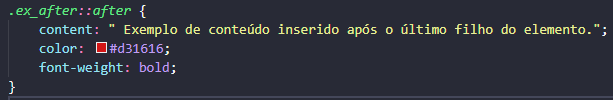

Palavra chave adicionada a um seletor que permite que vocês personalize uma parte específica do elelemtno selecionado.
Cria um pseudo-elemento que é o último filho do elemento selecionado. Comumente utilizado para adicionar um conteúdo de um elemento com a propriedade content.
Posicione o cursor sobre as palavras sublinhadas para um exemplo de utilização do after com hover.
Da mesma forma que o after, basicamente representa um elemento que será criado como primeiro filho de um elemento. Muito utilizado para inserção de content.
Representa um input do tipo file. Personaliza o botão do input.
Representa a primeira letra de da primeira linha de um bloco.
Aplica estilo à primeira linha de um bloco.
Utilizado para estilizar quando existe uma sinalização de erro gramatical. É utilizado junto com o contenteditable spellcheck = true para realizar a verificação ortográfica de acordo com a linguagem utilizada. Aqui estamos estipulando um conteúdo editável pelo usuário e nesse bloco haverá verificação ortográfica.
Escreva algo aqui e verifique a ortografia:
Seleciona a caixa de marcação de uma lista, que normalmente contém uma bola ou números. Funciona com qualquer elemento setado como display list-item, assim como nas tags li e summary.
Personaliza o texto que é definido como parte do elemento input.
Aplica estilo ao conteúdo selecionado pelo usuário, tal como um texto, onde ele clica e arrasta para selecionar.